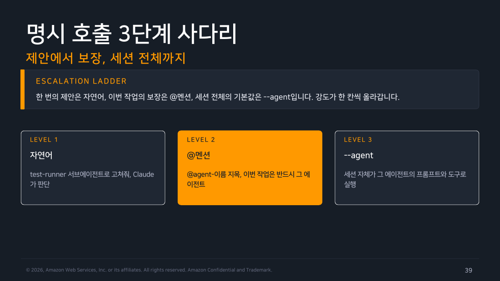
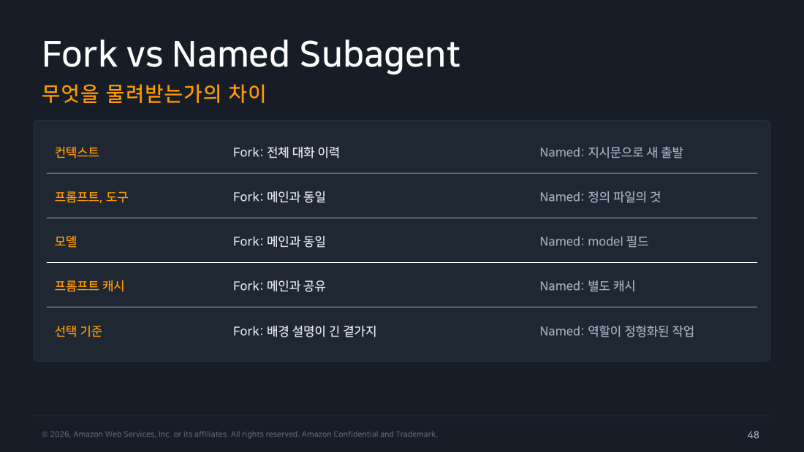
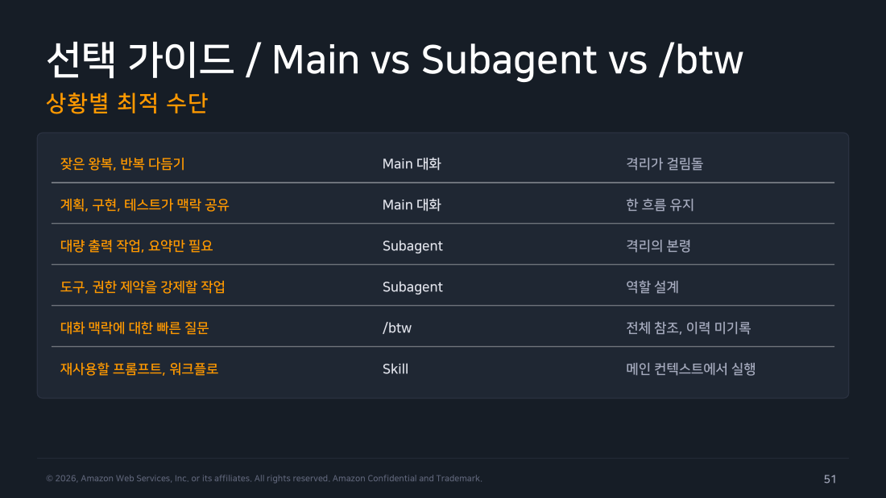

Part 3 — Agent 도구와 디스패치¶
한 줄 요약¶
처음에는 @agent-code-reviewer로 특정 에이전트를 한 번 호출하고 결과를 확인합니다. 자연어 자동 위임과 --agent 세션 고정은 그 다음 선택지입니다. 병렬, 격리, 체이닝, /subtask(구 /fork)는 작업이 커질 때 범위를 조절하는 심화 기능입니다.
왜 알아야 하나¶
디스패치(dispatch) 는 작업을 어느 에이전트에게 보낼지 정하는 과정입니다. 정의 파일을 잘 만들어도 원하는 에이전트를 부르고 결과를 확인할 수 없다면 제대로 쓰기 어렵습니다. W1에서 했듯이 먼저 특정 에이전트를 명시 호출하고 결과가 기대한 범위인지 확인하세요. 자동 위임은 편의 기능일 뿐, 특정 에이전트를 지정하는 기능은 아닙니다.
1. Agent 도구 — 위임의 기본 단위¶
메인 Claude는 Agent 도구를 호출해 서브에이전트를 만듭니다. 이는 별도 작업 세션을 시작하는 호출입니다.
v2.1.63에서 Task 도구가 Agent로 개명됐습니다. 기존 Task(...) 표기는 별칭으로 계속 동작하므로, 기존 권한 규칙이나 설정의 Task(...) 항목은 수정 없이 유효합니다.
Agent 도구 호출 시 메인이 위임 지시문과 subagent_type을 함께 넘깁니다. 완료되면 결과 요약과 agent ID가 메인으로 귀환합니다.
Agent 도구 자체를 deny에 등록하면 모든 위임이 봉쇄됩니다. 처음에는 한 에이전트만 호출하면 됩니다. tools를 명시한 에이전트가 다시 다른 에이전트를 만들게 하려면 목록에 Agent가 필요합니다.
운영 상한(심화)
중첩 깊이는 v2.1.172~216에서는 5단계 고정이었고, v2.1.219부터 기본 3단계입니다. CLAUDE_CODE_MAX_SUBAGENT_SPAWN_DEPTH로 조절할 수 있으며, 동시 실행 기본 상한은 20개(CLAUDE_CODE_MAX_CONCURRENT_SUBAGENTS)입니다. 세션 전체의 누적 스폰 수에는 현행 공식 상한이 없습니다. 병렬 운영을 시작할 때만 동시 상한을 점검하세요.
2. 자동 위임 — 세 가지 판단 재료¶
Claude는 사용자 요청과 에이전트의 description, 현재 대화 맥락을 함께 보고 위임 대상을 정합니다.
-
요청의 성격: 사용자 프롬프트에 담긴 작업 서술입니다. "결제 모듈 리팩토링 끝났어, 커밋 전에 점검하자"처럼 domain 단어가 담기면 관련 에이전트의 description과 매칭이 일어납니다.
-
description: 각 에이전트의 발동 시점과 능동 문구. "MUST BE USED when tests fail" 같은 강한 능동 문구가 자동 위임 확률을 높입니다.
-
현재 컨텍스트: 대화 흐름과 작업 상태. 방금 코드를 수정한 직후라면 code-reviewer가 매칭될 가능성이 높아집니다.
이 정보가 잘 맞으면 Claude가 에이전트를 고르고 위임 지시문을 작성해 스폰할 수 있습니다. 하지만 현재 컨텍스트와 내장 스킬도 선택에 영향을 줍니다. 특정 커스텀 에이전트가 필요한 작업에서는 자동 위임에 기대지 마세요.
3. 호출 방법 고르기¶
특정 에이전트를 반드시 써야 한다면 @멘션부터 사용합니다. 자연어 호출은 Claude에게 선택을 맡기는 편의 경로입니다.
flowchart TD
L1["LEVEL 1 — 자연어\n'code-reviewer로 리뷰해줘'\nClaude가 판단해서 선택"] --> L2
L2["LEVEL 2 — @멘션\n'@agent-code-reviewer diff 봐줘'\n이번 작업은 반드시 이 에이전트"] --> L3
L3["LEVEL 3 — --agent 플래그\n'claude --agent code-reviewer'\n세션 전체가 이 에이전트의 프롬프트·도구로 실행"]
style L1 fill:#e3f2fd,stroke:#1976d2,color:#000
style L2 fill:#fff3e0,stroke:#f57c00,color:#000
style L3 fill:#ede7f6,stroke:#673ab7,color:#000
▲ 교재 슬라이드 39 — 명시 호출 3단계 사다리
-
자연어(Level 1): "test-runner 서브에이전트로 고쳐줘"처럼 이름을 언급하면 Claude가 판단해 해당 에이전트를 선택합니다. 선택권이 Claude에게 있습니다.
-
@멘션(Level 2):
@agent-code-reviewer처럼 골뱅이로 지목하면 이번 작업은 반드시 그 에이전트가 처리합니다.@입력 후 타입어헤드에서 선택하거나, 수동으로@agent-에이전트이름을 입력합니다. 플러그인 에이전트는@agent-my-plugin:review:security형식입니다. 타입어헤드에는 실행 중인 백그라운드 에이전트도 상태와 함께 표시됩니다. -
--agent(Level 3): 세션 자체가 그 에이전트의 시스템 프롬프트, 도구 제한, 모델로 실행됩니다. 기본 Claude Code 프롬프트를 완전히 대체하지만, CLAUDE.md와 프로젝트 메모리는 그대로 로드됩니다.
.claude/settings.json에{ "agent": "code-reviewer" }를 넣으면 세션 기본값을 고정할 수 있으며, CLI 플래그가 설정보다 우선합니다.
4. 자주 쓰는 위임 패턴¶
병렬 리서치¶
독립적인 조사를 동시에 여러 에이전트에 맡깁니다.
세 에이전트가 동시에 탐색하고, 각자 자기 컨텍스트에서 파일을 소화한 뒤, 완료되는 대로 요약이 메인에 도착합니다. 조사 경로가 서로 의존하지 않는 것이 조건입니다.
고볼륨 격리¶
대량 출력을 자식 컨텍스트에서 소화하고 핵심만 회수합니다.
수천 줄짜리 로그는 자식에서 처리되고 메인에는 실패 목록만 돌아옵니다.
체이닝 (순차 연결)¶
기본 체이닝은 앞 에이전트의 결과를 메인이 받아 다음 에이전트의 지시문에 반영하는 방식입니다. 다만 SendMessage가 제공되는 세션에서는 이름이 있는 sibling agent 또는 main에 메시지를 보내고, 완료된 에이전트를 재개할 수 있습니다. 팀을 켜야만 가능한 기능은 아닙니다.
5. 백그라운드 운용¶
백그라운드로 실행한 에이전트는 관리 패널에 한 줄씩 표시됩니다.
키보드 조작:
- 위아래 화살표: 패널 행 이동
- Enter: 트랜스크립트 열람, 후속 지시 전송
- x: 에이전트 중지 또는 완료 후 정리
- Esc: 프롬프트 입력창으로 복귀
- Ctrl+B: 실행 중 작업을 백그라운드로 전환
권한 요청은 요청 에이전트 이름과 함께 메인에 표시됩니다. /tasks 명령으로 전체 작업 현황을 볼 수 있습니다.
6. Resume과 SendMessage — 종료된 에이전트 이어 깨우기¶
완료된 에이전트에게 후속 작업을 이어 맡기는 기능입니다. 에이전트가 끝나면 메인이 agent ID를 받습니다. "그 리뷰에 이어 이번에는 인가 로직을 분석해줘"라고 요청하면 Claude가 SendMessage 도구로 해당 에이전트를 재개합니다. 이전 대화와 도구 호출, 결과를 보존한 채 계속 일합니다.
Claude가 TaskStop으로 멈춘 에이전트도 SendMessage를 받으면 새 Agent 호출 없이 재개할 수 있습니다. 반면 사용자가 /tasks의 x로 중지했거나 SDK가 stop_task로 취소한 에이전트는 자동 재개되지 않습니다(v2.1.191+). 사용자가 해당 에이전트의 트랜스크립트에 직접 입력해 중지 상태를 풀면 이후 SendMessage 재개가 다시 가능합니다. 이름이 같은 에이전트가 여럿일 때 충돌하면 전송을 거부하고 어느 에이전트를 대상으로 할지 안내합니다(v2.1.199+).
Explore와 Plan은 One-shot 특성이라 재개가 불가능합니다.
7. 중첩 서브에이전트¶
v2.1.172부터 서브에이전트도 자기 서브에이전트를 만들 수 있습니다.
중간 에이전트의 도구 목록에 Agent가 있어야 중첩 스폰이 가능합니다. 깊이는 메인에서 기본 3단계까지이며(§1 참고), CLAUDE_CODE_MAX_SUBAGENT_SPAWN_DEPTH로 조절할 수 있습니다. 패널 행에 하위 에이전트 개수(+N)가 표시되며, 열면 형제와 자식 경로를 볼 수 있습니다.
최상위 서브에이전트의 요약만 메인으로 귀환합니다. 중간 단계의 출력은 그 아래 컨텍스트에 머뭅니다.
주의
Fork는 Fork를 스폰할 수 없습니다. /subtask로 만든 서브에이전트에서 다시 /subtask를 시도하면 오류가 발생합니다.
8. /subtask 상세 — 대화 전체를 물려받는 특수 서브에이전트¶
/subtask는 현재 세션의 대화 이력, 도구, 모델을 그대로 복사한 서브에이전트를 만드는 슬래시 명령입니다.
Warning
이 명령은 v2.1.212부터 /subtask 입니다. 그 전에는 /fork가 이 역할이었습니다(v2.1.117~160은 CLAUDE_CODE_FORK_SUBAGENT=1 필요, v2.1.161부터 기본 활성). v2.1.212 이후의 /fork는 인세션 서브에이전트가 아니라 세션 전체를 별도 백그라운드 세션으로 복사하는 다른 명령으로 의미가 바뀌었습니다.
지시문 첫 단어들로 이름이 자동 부여되고 백그라운드로 진행됩니다. 메인의 프롬프트 캐시를 공유하므로 신규 스폰보다 저렴합니다.
Named Subagent와의 결정적 차이는 "무엇을 물려받는가"에 있습니다. Fork는 컨텍스트·프롬프트·도구·캐시를 전부 메인과 공유한 채 출발하는 반면, Named Subagent는 정의 파일에 적은 지시문으로 새로 시작하고 캐시도 별도입니다. 그래서 배경 설명이 긴 곁가지 작업이라 현재 맥락을 그대로 넘기고 싶다면 Fork를, 역할이 정형화되어 깨끗한 컨텍스트에서 출발하는 편이 나은 작업이라면 Named Subagent를 고릅니다.

▲ 교재 슬라이드 48 — Fork vs Named Subagent
9. 에러 처리 (v2.1.199+)¶
API 오류로 끊긴 에이전트는 오류 텍스트를 결과인 척 반환하지 않고 실패로 정확히 보고합니다. 부분 산출물은 함께 보존됩니다.
포그라운드 에이전트가 실패하면 부분 출력과 중단 안내가 표시됩니다. 백그라운드는 실패로 마킹되고 종료 메시지에 오류명과 마지막 출력이 포함됩니다. 원인 해소 후 재시도하거나, 실패 지점에서 resume으로 이어서 복구할 수 있습니다.
사전 안전장치로 maxTurns 상한과 훅 검증을 조합하면 폭주와 위험 호출을 차단할 수 있습니다.
10. 관측과 디버깅¶
에이전트별 트랜스크립트(그 세션의 모든 메시지와 도구 호출이 한 줄에 하나씩 기록된 JSONL 파일)가 ~/.claude/projects/{project}/{sessionId}/subagents/agent-{agentId}.jsonl에 저장됩니다. 압축 이벤트도 기록되어 "이 에이전트가 얼마나 컨텍스트를 썼는지"를 preTokens 값으로 확인할 수 있습니다.
settings.json의 수명 주기 훅 SubagentStart / SubagentStop에 에이전트명 매처를 붙이면 특정 에이전트의 시작과 종료에 자동화를 연결할 수 있습니다. 예를 들어 DB 에이전트 시작 시 연결을 준비하고, 종료 시 정리하는 스크립트를 연결할 수 있습니다.
11. 선택 가이드 — Main vs Subagent vs /btw vs Skill¶
먼저 격리가 필요한지 판단합니다. 왕복이 잦거나 계획·구현·테스트가 계속 같은 맥락을 써야 한다면 Main 대화에서 이어가는 편이 낫습니다. 출력이 많거나 역할별로 도구와 권한을 제한하려면 Subagent가 맞습니다. 현재 대화에 관해 잠깐 묻고 답을 이력에 남기고 싶지 않다면 /btw, 프롬프트나 워크플로를 재사용하려면 메인 컨텍스트에서 실행되는 Skill을 사용합니다.

▲ 교재 슬라이드 51 — 선택 가이드 / Main vs Subagent vs /btw
직접 해보기¶
실행 환경: macOS 26.5.1 / Claude Code v2.1.x
핸즈온랩 Task 4의 디스패치 3패턴 실습입니다.
Claude 세션 내에서 — 자동 위임 테스트:
@멘션 명시 호출:
병렬 디스패치:
실제 실행 메모 (2026-08-09, v2.1.226, 헤드리스 + tmux 대화형 확인):
-
자동 위임: 시점 문구를 넣은
description으로code-reviewer를 등록한 뒤 "이 프로젝트의 최근 변경 사항을 코드 리뷰해 주세요"라고 요청했지만,code-reviewer를 향한Agent호출은 0건이었습니다. 요청을 처리하지 않은 것은 아닙니다. 내장/code-review스킬이 선택되어general-purpose서브에이전트로 위임했습니다. -
명시 호출: 같은 세 에이전트를 프롬프트에 명시해 병렬로 요청하니 모두 정확히 스폰됐습니다.
Agent 호출:
-> code-reviewer
-> test-writer
-> docs-writer
total_cost_usd: 0.6256 | duration_ms: 20,294 | 서브에이전트 3개 스폰 확인
-
백그라운드 패널: tmux 대화형 세션에서
code-reviewer를 지목해 위임하자Backgrounded agent표시와 함께 관리 패널에 진행 상황(경과 시간·토큰)이 실시간으로 떴습니다. 완료 후에는Agent "..." finished · 1m 21s로그와 결과가 도착했습니다./cost에는Subagents % of usage로 에이전트별 사용 비중이 표시됐습니다. -
비용: 병렬 실행은 단일 리뷰보다 약 2.5배 비쌌습니다. 랩의 "최대 7배"는 상한 경고로 읽는 게 맞겠습니다.
전체 로그와 세션 ID는 Part 07에 있습니다.
흔한 오해 바로잡기¶
-
"자동 위임은 항상 동작합니다" — description의 트리거 단어와 현재 컨텍스트가 모두 맞아야 합니다. 확실히 특정 에이전트를 써야 한다면 @멘션이 더 안전합니다.
-
"체이닝이 되면 항상 메인이 중계해야 합니다" — 기본 체이닝은 메인이 결과를 다음 지시문에 넣는 방식입니다. 다만
SendMessage가 제공되면 이름 있는 sibling agent·main으로 메시지를 보내거나 완료된 에이전트를 재개할 수 있습니다. -
"Task와 Agent는 다른 도구입니다" — 이름만 바뀐 것입니다. 기존
Task(...)표기는 별칭으로 유효합니다.
정리¶
자연어 호출은 Claude가 대상을 고르고, @멘션은 특정 에이전트를 지정합니다. --agent는 세션 전체를 해당 에이전트로 실행합니다. 독립 작업은 병렬로 보낼 수 있고, 대량 출력은 자식 컨텍스트에 격리할 수 있으며, 앞선 결과가 필요하면 순서대로 연결합니다. /subtask는 현재 대화 맥락을 통째로 넘기고, Resume과 SendMessage는 완료된 에이전트를 이어서 실행합니다. 다음 파트부터는 이 기능을 실제 패턴에 적용합니다.
출처¶
- Claude Code Deep Dive Workshop — Chapter 2 / Agents (Subagents) / Part 3: 디스패치 (17p)
- 공식 문서: Sub-agents · CLI reference · Hooks · Prompt caching